[ Home ] [ Travel ] [ Photography ] [ Pets ] [ Games] [ Rowing] [ Physics ]


Cruising on the Diamond Princess
Travel
Cruises
Past Cruises (Diaries)
Future Cruises
Rogues Galleries
Land Trips
Diaries (Land Trips)
Hawai'i - Big Island - 04'01
Hawai'i - Maui - 05'02
Hawai'i - Big Island - 04'03
Hawai'i - Kaua'i - 09'04
Hawai'i - Big Island - 04'06
Hawai'i - Maui - 04'06
Mainland China - 05'07
Phoenix, Arizona - 12'07
Greek Isles - 05'08
Hawai'i - Kaua'i - 09'08
Hawai'i - Big Island - 09'09
Hawai'i - Maui - 05'12
Hawai'i - Big Island - 04'13
Ireland - 08'13
Mexico - Cancun 11'13
France/Belgium/Lux 07'15
Hawai'i - Big Island - 05'17
England / Wales - 06'17
Hawai'i - Big Island - 09'19
Photography
Cameras
Underwater
Pets
Tara
Blackie
Whitey
Muffy
Ollie
Rusty
Fluffy
Rufus&Dufus
Games
Rowing
Physics
Rating (out of 5): Ship  Food
Service
Food
Service  Itinerary
Itinerary
Several years ago we had booked a 31 day cruise from Sydney to San Francisco on the Dawn Princess, which was subsequently cancelled by Princess when they decided to move the Dawn into the Australian market. As a result, we were given a future cruise credit of 50% off, to be used on a South Pacific cruise of at least 35 days. We finally settled on this cruise. With the discount, the price dropped to $72 per day per person. Amazingly inexpensive! At the time we booked it, it was marketed as a 35 day cruise. Later on we discovered that it was actually 2 back-to-back cruises of 12 and 23 days. To keep the diary a reasonable size, I will write up the 2 legs as 2 separate diaries.
The first leg of the cruise took us from Auckland to Sydney in 12 days. We did not know anyone on this leg before the cruise, other than the folks we had met online through Cruise Critic. So, it was going to be an opportunity to meet lots of new people. We had booked "anytime dining" and had a full slate of shore tours arranged. The ship was essentially full at 2606 passengers, of which about 600 of us would be staying on for the second leg to Beijing.
As a special bonus, we were looking forward to visiting with folks in Auckland (Bob and Sheryl, dinnermates from our around Australia cruise last year) and folks in Dunedin (Peter and Halcyon, trivia-mates from our Black Sea cruise, also last year). Below I'll refer to our friends as B&S and P&H.
Note: Because we were traveling for 6 weeks and visiting both summer and winter climates, we had to decide
what clothes to take. We opted to drop formal night clothes in deference to coats, toques and mitts for China. So, we
skipped all 6 formal nights in the dining room and instead ate in the buffet. That worked out just fine.
Pre-cruise (Jan 23 - 25) - Travel to Auckland
We had a mid-afternoon flight, so Chrissy and Matt picked us up at 11:30 AM. We drove
to the White Spot near the airport where I had the roast beef. It was very good.
Then we drove on to the airport, arriving there at 1:00 PM. We checked in,
went through US customs pre-clearance and waited for
our 3:55 flight to San Francisco. Our flight was ontime and we arrived in San Francisco at
5:45 PM. We had a quick 2 hour layover and left
again at 7:45. For some reason the flight to Auckland was only 11:40 hours long rather than
13:00 hours as scheduled. I wasn't sure why. Jan 24 disappeared
as we flew over the dateline. We arrived in NZ at 4:45 AM. As usual, we did not sleep at all
on the airplane. Going through the NZ customs, grabbing our
baggage and then locating the Super
Shuttle to the Langham took about an hour. We checked in to the Langham at 6:00 AM. We
were prepared for an early arrival and had booked the night before so that we would have a
room to crash in. We were in bed by 6:30 to catch the end of the night (it was still dark out).
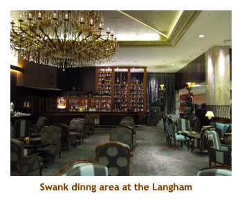
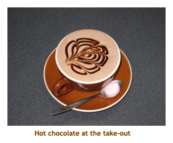
We woke up at 9:30 AM or so feeling slightly refreshed. We had been to Auckland 3 years ago and had done the HO-HO bus around the city, visiting all the highlights. This time we had no plans for any sightseeing in the big city. We headed out on the LANGHAM shuttle to downtown. It was only a few blocks, but the shuttle made it easy. We walked around the downtown area, bought some groceries (bullets, drinks, wine, cookies) and had lunch at a cafe with great fish & chips. We walked around some more, bought some souvenirs, and then shuttled back to Langham at 1:45. It was a warm and sunny day, so we went out to the pool - me to swim and Marj to read. I met a young honeymoon couple in the pool who were from Edmonton. Small world! The pool attendant brought around free nibblies - olives and bread sticks wrapped in prosciutto. Afterwards we did a quick walk around the neighbourhood to locate a place for breakfast. The hotel charged $37 (each!) for breakfast, but we found a fast food place that did the same for $5. We didn't do dinner, but just read and watched tennis on TV. We were in bed by 9:00 PM. We slept pretty well.
The next day we were up at 6:00 AM, then off to breakfast at 7:00. The little restaurant we
had found yesterday did a really good breakfast. I had a hot chocolate with my meal and it
came whipped, with a pattern in the foam. Afterwards we hiked down the block to
Starbucks where Marj had a hot chocolate. Then it was back to the hotel to shower, pack and
checkout. B&S were picking us up at 9:30.
Pre-cruise (Jan 26, 27) - A visit to Leigh
B&S met us in the lobby just after 9:00 AM. It was another beautiful sunny day, around 25 degrees. We drove about an hour north to the village of Leigh, stopping at their home. B&S toured us around their yard (lots of flowers and veggies) and house. Lovely! We had a cup of tea and visited for a while, then headed to the nearby Ascension Winery for lunch. I had delicious lamb kabobs! We drove back to house and then walked around the local harbour. B&S are very fortunate to be so close to the water. Bob did a barbie for dinner - beef and chicken. Excellent! We visited for the evening, but were early to bed - still recovering from the time difference.
We woke up at 6:30 AM, so got up, checked our email and read a bit. B&S were up shortly after for
breakfast. Aftwerwards we drove north to Cape Rodney - Okakari Point marine reserve (Goat Island) and walked
along the beach. Once again it was a beautiful sunny day. There were lots of shag on the beach, a bird
not seen in North America. The water was quite churned up, so we couldn't see much in the way of fish,
just a few large snapper.
We returned to the house for lunch. After lunch, we headed back into
Auckland. We were at the ship by about 1:30. We said goodbye to B&S and entered the cruise terminal.
What a wonderful time we had in Leigh! Thank you Bob and Sheryl.
| 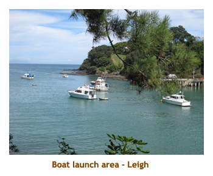 | 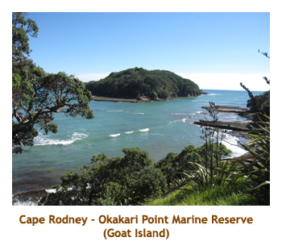 | 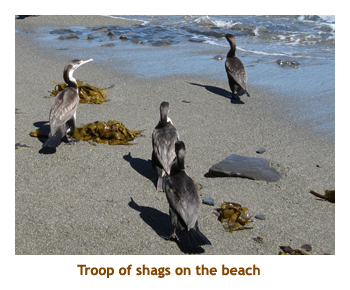 |
Day 1 (Jan 27) - Boarding at Auckland
After saying goodbye to B&S, we entered the cruise terminal building. We had to go through
several lineups - local security, NZ passport control and dog sniffing, then the Princess check-in desk.
However, it was fairly quiet so the lines moved quite quickly. We were on board by 2:30 PM, so our
cabin was ready for us. The first thing I did was to phone room service to trade our free bar setup
for 20 cans of Coke. (I get free Coke because we are Elite). The bar girl showed up almost immediately
and I stocked the fridge. Our luggage arrived shortly after, so we unpacked and put things away.
We wandered the ship, reaquainting ourselves with the Diamond Princess (yes, we cruised her in
2004 when she was only 6 weeks old). The Diamond was in dry dock for refurbishment just 2
months ago, so she was in fine shape. Muster drill was at 5:15 PM. We headed down to dinner about
6:00 PM. There are four smallish dining rooms for the anytime diners. Each restaurant has its one
"specialty" plus, of course, the regular dinner menu. I had prime rib which was very good.
We skipped the entertainment and instead went early to bed.
Day 2 (Jan 28) - Counting Sheep in Tauranga
Today we arrived in Tauranga at 9:00 AM. The forecast was for cloud, 24 degrees and it was supposed to rain in the later afternoon. We were up at 7:00 and had breakfast. We met for our all day tour at 9:20 in the theatre. We drove through the village of Tauranga and then out into the countryside towards Rotarua. Our first stop was at the Agrodome (I know it's spelled wrong, but that's how they spell it). We wandered around the hobby farm and then went into the "dome" for the sheep show. On stage there looked to be a bunch of plastic sheep, but when we approached, they were real! As part of the show, they paraded out examples of all 19 varieties of NZ sheep and talked about their characteristics. Then there was a sheep shearing demo followed by 3 sheep dogs herding a flock of geese around the stage. Finally a large milk cow was brought out and 3 of the audience got to milk it. Lots of fun! Then we went outside to a demo of the sheep dogs with a real flock of sheep. After the show we browsed through the gift shop.
Then we drove into Rotarua to a hotel for lunch. We attacked the wonderful
buffet at about 2:00 PM. As we ate, there was a Maori entertainment show
on stage. It was very good. Then we were off to Te
Puia to see the geysers and bubbling mud pits. The site was owned
and run by Maori people so there was stuff about the Maori culture. The
gift shop had a wonderful variety of all things Maori. If only we had
more room at home! We left the thermal attraction at 5:00. The town of
Rotarua has a beautiful public garden, so the bus took us on a drive-through.
Then we drove back to Tauranga (about 1.5 hours). As we travelled through
the countryside, it started to rain. That was OK though as we were on the bus.
Back aboard we made
it to dinner about 7:00, so didn't get out of the restaurant until 9:00.
I had the shrimp kabobs. Yummy! We skipped the entertainment as it was
too late.
| 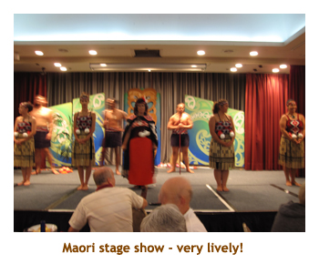 | 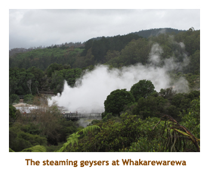 | 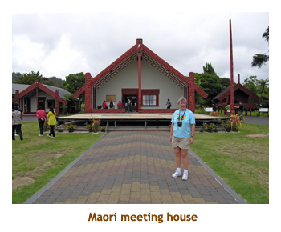 |
Days 3,4 (Jan 29,30) - Day at sea, then Christchurch
Day 3 - Today was a day at sea. A cyclone was supposed to be hitting the area.
The day was cool, windy
and rainy. I was up at 6:30 and off to gym just after 7. It was packed so I left.
We went to breakfast and then trivia at 9:30. At our first trivia, we met a couple who were to
become faithful trivia mates (right through to Beijing) - Ray and Mary Jane. There was a
lecture at 11:00. We had lunch in the Savoy restaurant - it was a British pub lunch with fish and chips.
At 1:30 we did the spa draws, but didn't win anything. Then Marj headed off to another
lecture, while I took another stab at the gym (not so busy this time). I realized after
that we had missed the Cruise Critic get together at 1:30. Oh well, we would meet some of the
folks out and about. I watched
some Corner Gas, then went to trivia at 4:30. It was dressup night so we did buffet instead.
Afterwards we went to singer in the Explorers Lounge.
He was OK, but did Frank S, Tony B, Andy W, Ray C, etc. which aren't really my cup of tea.
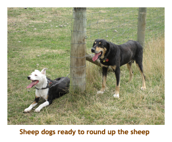
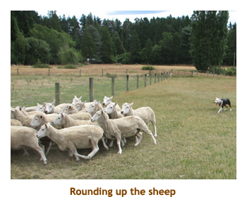
Day 4 - The ship rocked and rolled all night. Today though was supposed to be sunny and 24. Instead, we had heavy cloud, some rain and it was cool. We had an all day tour booked for Christchurch, travelling on the Tranz Alpine Railway (I know it's spelled wrong, but that's how they spell it). We were up at 6:30, off to breakfast, and then met for the tour at 7:50. There were 5 bus loads of us for this tour. We headed out to the bus and drove 2 minutes to theTranz Alpine train parked in sight of the ship. Why didn't we just walk? Normally the train travels from Christchurch ( on the east coast) to Greymouth (on the west coast) across the Southern Alps. However, due to our time constraints, the ship had arranged for us to go about halfway - to Arthur's Pass. After that, we were to be bused to a sheep farm. The trip to Arthur's Pass took about 2.5 hours and travelled through fields and valleys and mountains. Along the way we were served drinks, and then lunch. We had a stop at Springfield along way, to stretch our legs. The stop at A.P. lasted for 30 min then we got the news that our bus (bus #3) had broken down. It was raining and cool by now. Our group (bus #3) were put back on train while the others left by bus. At Springfield, we were greeted by the replacement bus. We drive to Deans Farm and caught up with the other buses. It was still cloudy but warming up. We were served cookies and tea, and then given sheep shearing and sheep dog demos. I was starting to think that I could shear a sheep myself now. Then we drove to Christchurch for tour through the city. There were visible signs of the September earthquake damage - repair scaffolding, cracked brickwork, etc. We were back to ship by 5:30. We changed for dinner and headed down to the dining room. I had lamb roast. We skipped the entertainment.
Postscript: As we surveyed the minor earthquake damage in Christchurch, we had no idea
that two weeks later Christchurch would be hit by a devastating earthquake destroying parts of the city
and the beautiful cathedral.
Day 5 (Jan 31) - Visiting in Dunedin
Today we were in Dunedin (Port Chalmers is the port). We were going to spend the day with some
friends that we met on our Black Sea cruise last June. Peter was working, but we would see him
later in the day, so Halcyon chaperoned us for most of the day. We had breakfast and then headed off the ship
about 8:45 AM. Halcyon was already waiting for us as we exited the cruise terminal. She drove us
from Port Chalmers to Dunedin going a "back route" where we could see the beautiful countryside.
We stopped at a high outlook that gave us a wonderful view of the surrounding hills and valleys.
Then we drove through Dunedin seeing the residential and commercial areas, and the "steepest
street in the world". Then we stopped at the botanical gardens and had a lovely walk through the flower
gardens. This was extra special as it was winter back home! After touring the gardens, we drove
to very near the place where Peter worked and met him and two of their daughters (Antonia and
Annushka) at a restaurant for lunch. In the afternoon we left Peter and the daughters, and
Halcyon took us to see Olveston House.
This was a large, stately manor built around 1900 for the Theomin family. It was furnished with period furniture
and was very interesting.
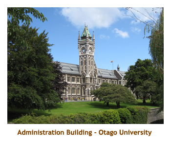
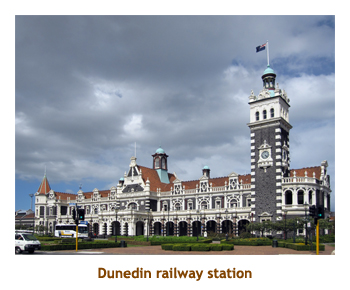
Afterwards we drove to the Otago Museum where Antonia and Annushka met us again. This museum was full of Maori artefacts, but we unfortunately didn't have nearly enough time to do it justice. This will be a must visit if we return to Dunedin again. While at the museum, the skies clouded over and it poured in rain. After the museum, we walked next door to the Otago University and the daughters showed us around the campus (both had attended school there). It was sunny again and the campus buildings stood out in the blue sky and sunshine. It was nearing 4:00 PM by now, so Halcyon drove us all back to Peter's workplace. Along the way we picked up a third daughter (Felicity). We arrived about 20 minutes or so before Peter finished work. We said goodbye to Halcyon and the family, then Marj and I wandered over to the famous train station to take some photos. Peter finished for the day and drove us back to the ship by 5:15. It had been a wonderful day with our Dunedin friends. Thank you Halcyon and Peter! We changed and went straight to dinner - I had braised short ribs. We skipped the entertainment.
Note: On a recent summer vacation, Annushka and Felicity rode their bicycles across Canada
- from Victoria to St. John's. That is an awesome feat and something to be proud of! Well done.
| 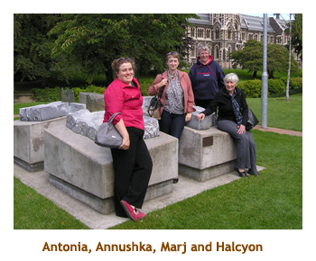 | 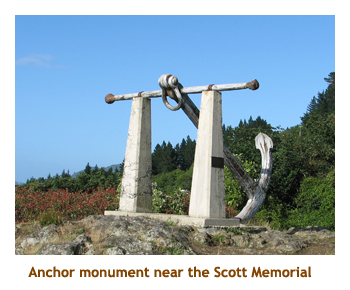 | 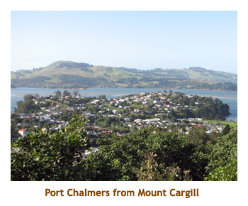 |
Days 6-8 (Feb 1-3) - Milford Sound and Crossing the Tasman Sea
Day 6 - Today we were scheduled to sail around the bottom of New Z ealand and then into DuskySound and Milford Sound (fjords). Due to some winds and bumpy seas (we tossed and turned all night), we arrived at the fjords quite late (noon and 6:00 PM respectively). To add insult to injury, there was a heavy mist that prevented seeing the full glory of the majestic mountains rising from the sea - one could only see the lower part of the coastline. Marjorie and I had done these fjords several years ago, and it had been in blue sky and sunshine. So, this time we did not bother going outside into the cold or taking any photos. Instead, we treated this day and the next two as three sea days in a row. We did feel sorry though for those other cruisers who had not been here before.
Days 7 & 8 - These were typical sea days - breakfast, trivia, gym, Corner Gas,
lecture, lunch, play some cards, trivia, dinner, entertainment, off to bed.
Our first day on the Tasman was calm and sunny, the second day was cloudy
and a bit rough. One afternoon was a Cruise critic tea, so we got to meet a few
people that we had missed on the first get together. Dinners for
the three sea days were shrimp
kebobs, pot roast and roast lamb - all very good. We attended a group called
Encore (soprano, tenor and baritone) who did a wonderful program of opera,
showtunes and popular songs. The following night they were in Explorers
Lounge for another concert. Unfortunately they did exactly the same program
again, but it was still excellent. We gained a bit of time too, as twice we had
to put our clocks back 1 hour.
Day 9 (Feb 4) - Back to Hobart
We arrived at Hobart around 7:00 AM. It was sunny and blue sky, about 24 degrees.
We grabbed breakfast, and then headed off to our tour at 8:30. We drove south
on the bus to the quaint village of Richmond, arriving by 10:00 AM. Our first
stop there was at the church of St. John. Then we drove down the main street and stopped
at the Richmond Gaol, built in 1825. After touring through the old gaol, we were given time to wander
around the town. We chose to walk along the river to the old Richmond Bridge. What
a gorgeous day! The bridge was built in 1823 to 1825 and is the oldest bridge in
Australia still in operation. We walked around about 1 hour enjoying the sunshine and
the period buildings. We looked through some shops near the gaol and then
reboarded the bus.
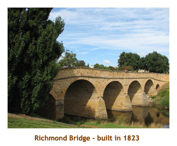
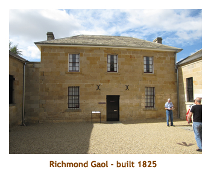
We drove through the countryside to an animal park called Bonorong, arriving at 11:45.
We were given an hour to wander through the park. Grey kangaroos wandered freely with the
people, but the other animals were fenced off. We saw wombats, koalas, quolls, emus,
Tasmanian devils, various birds, etc. It was a wonderful park and I really enjoyed petting
and feeding the kangaroos. They are so laid back and gentle. We hopped back on the
bus and were back to the ship by 1:15. We had a late lunch and headed back out again.
We caught the 2:00 PM Hobart city center shuttle and wandered around the downtown area.
We had been here before, so knew our way around (somewhat). We popped into a liquor store
and I bought a few Cascade beer (local brew). On our walk back to the shuttle we stopped
at the main town square. There were some interesting civic buildings surrounding the square,
and a statue / fountain in the middle.
We were back on the ship just in time for the Hobart Police Pipe Band.
Marj went to see them (er, hear them?) in the theatre, while I went to the gym. We heard the
same pipe band a year ago when we did the around Oz cruise, so once was enough.
For dinner I had leg of lamb. We skipped the entertainment.
| 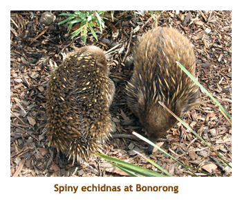 | 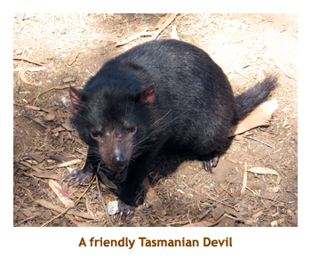 | 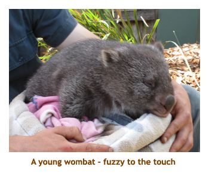 |
| 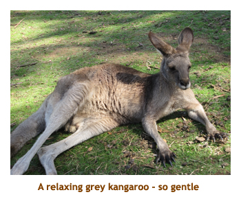 | 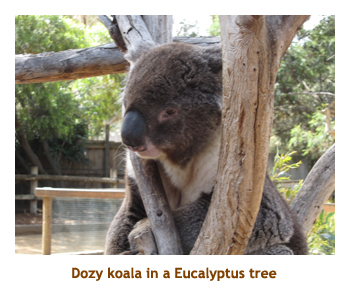 | 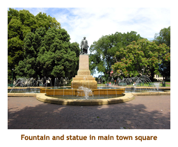 |
Days 10,11 (Feb 5,6) - At sea, then Melbourne
Day 10 - Today was a day at sea as we headed across the Bass Straight. It was cool and cloudy, with occasional rain. Perfect for a day at sea! It was a typical sea day - breakfast, trivia, gym, Corner Gas, lecture. For lunch they did my favorite English Pub lunch with wonderful fish & chips. Then it was another lecture and trivia. It was formal night so we had dinner in the buffet. We struck up a conversation with some folks from NZ and ended up sitting with them. We skipped the entertainment.
Day 11 - We arrived in Melbourne at 7:00 AM. It had reached 40 degress the previous week in honour of the Australian Open (tennis), Today was mixed sun and cloud and only 9 or 10 degrees. Brrrr! The previous couple of days had seen heavy rain thanks to Cyclone Yasi, and lots of areas in and around Melbourne were flooded. We had breakfast and then met for a ship's tour at 8:00. It was currently sunny. We did a driving tour of the city, but it was interrupted by some flooded streets. At one point we were going the wrong way down a one way street. Our guide said "Don't worry. This is a one way street and we're only going one way".
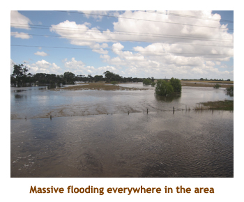 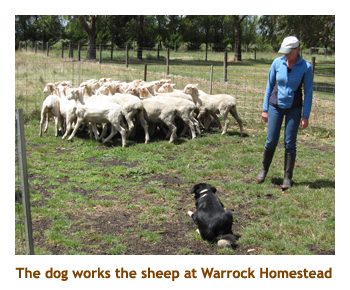Then we drove out into the outskirts of Melbourne
to Fern Gully and boarded Puffing Billy - an old steam train.
By this time it was raining and cold! We did a shortened
trip, stopping as the track was cleared of storm debris from the previous days. We were on
the train about an hour, disembarking at Melrose. Then we returned to the bus and drove through
flooded fields to the Warrook Homestead cattle ranch. There we had a sheep dog demo and a sheep shearing
show. All they seem to do in Oz is shear sheep! We had a wonderful beef and chicken lunch about
1:30. Just before
boarding the bus I sidetracked to a wombat pen where an older guy let me pet the (huge) wombat and feed him
a carrot. The trip back to the ship, normally 1 hour, took 2.5 hours due to the main highway being closed in
places and having to detour on slower roads. We were back to the ship at dinner time. Tonight was
rack of lamb. It was good. No entertainment for us tonight.
Days 12,13 (Jan 28) - At sea, then Sydney
Day 12 - Today was our final day at sea for this leg - breakfast, trivia, gym/lectures, Corner Gas. Nothing exciting, can't remember dinner. In the evening there were lots of suitcases in the hallways as only 600 of us (out of 2,600) were staying on. It felt good not having to pack our bags!
Day 13 - Today was turnaround day in Sydney. We arrived 6:00 AM. It was still dark as we sailed into the harbour and the city was lit up for us. The opera house and harbour bridge twinkled in the dawn. We had breakfast, and met for our ship's tour at 9:00. It was a 2 hour harbour cruise with Captain Cook Cruises. We walked about 5 minutes to the Captain Cook pier. Had we known, we could have just bought our tour tickets from CCC for half the cost of the ship's tour! Oh well. It was cloudy (but warm) for the cruise which made our photos really dull, but the cruise itself was very interesting. It is a huge harbour and we circumnavigated all sides. The guide pointed out some huge homes along the shore that started at $20 million. A bit too much for us! We were back by noon. We walked around the downtown area looking for souvenirs and bought some aboriginal art drink coasters for our Calgary neighbour who was cleaning our driveway. We headed back to the ship for a late lunch and joined the new crowd of passengers boarding the ship for the Beijing leg.
Here endith the diary of the first part of our cruise to Beijing. Please
pop to the Sydney to
Beijing diary for the remainder of the story.